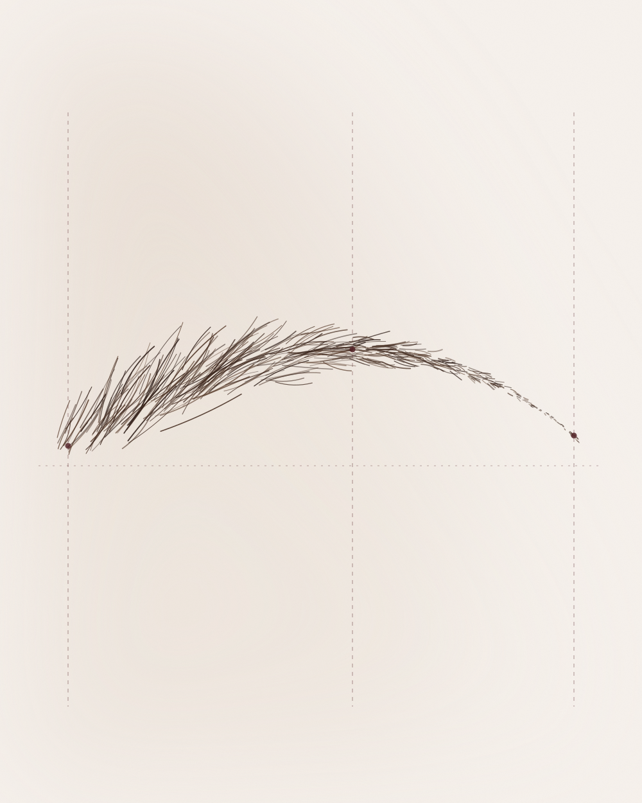

primero se
estudia, luego
se pigmenta.
La diferencia entre una ceja que parece tuya y una que parece puesta está casi siempre en lo que ocurre antes de encender el dermógrafo.
estudio previo
Miramos tu rostro y tu piel al detalle: proporciones, facciones, grosor de piel, tendencia grasa, vello existente y trabajos anteriores. También hablamos de lo que no quieres, que suele ser más revelador que lo que quieres.
- Sin compromiso y sin obligación de reservar
- Revisión de antecedentes y contraindicaciones
- Recomendación honesta: si no es tu momento, te lo decimos


diseño y mapeo
Medimos con hilo y compás sobre tu rostro, en reposo y en movimiento. Ninguna cara es simétrica, así que no buscamos dos cejas idénticas: buscamos dos cejas hermanas que equilibren tus rasgos y respeten tu expresión.
- Trazado a lápiz antes de cualquier aguja
- Ajustes hasta que el diseño te convence
- Lo ves de frente y en foto antes de empezar
hair stroke
Trazo a trazo, siguiendo la dirección real de tu vello. El pigmento no se elige por el color del pelo, sino por el subtono de la piel: es lo que decide si dentro de un tiempo la ceja vira a rojizo, a gris o se mantiene en su sitio.
- Mezcla de pigmento personalizada para cada clienta
- Anestesia tópica antes y durante la sesión
- Material estéril de un solo uso, abierto delante de ti

los días después
fase 04 · cicatrizaciónPrimeros días
El color se ve más intenso y el trazo más marcado de lo que será. Limpieza suave y una capa muy fina del producto que te damos, mañana y noche.
Descamación
Aparece una costra muy fina. No la toques ni la arranques: cada costra que se cae antes de tiempo se lleva pigmento con ella.
Resultado real
El tono baja y puede parecer que ha desaparecido. Es normal: el color reaparece con las semanas y el retoque termina de fijarlo.
Evita durante la cicatrización
- Sauna, piscina, mar y vapor
- Deporte intenso y sudoración fuerte
- Sol directo sin protección
- Maquillaje sobre la zona y exfoliantes
- Tocar o rascar la zona
Para que dure más
- Protección solar alta a diario sobre la zona
- Evita ácidos y retinol en la zona pigmentada
- Retoques de mantenimiento cuando toque
- Avísanos antes de un láser o tratamiento facial
tu piel también decide
El mismo trazo no se comporta igual en todas las pieles. Por eso el estudio previo incluye valorar la tuya antes de decidir la densidad y la profundidad del trabajo.
Piel seca o normal
Retiene bien el trazo fino y mantiene la nitidez del Hair Stroke durante más tiempo.
Piel mixta
Suele pedir ajustar densidad y separación entre trazos para que no se cierren al cicatrizar.
Piel grasa o con poro
Tiende a difuminar el trazo. Trabajamos con más separación y planificamos el mantenimiento con más margen.

hablemos de
tus cejas.
Escríbenos y te contamos qué se puede hacer en tu caso concreto, sin compromiso.
pedir cita